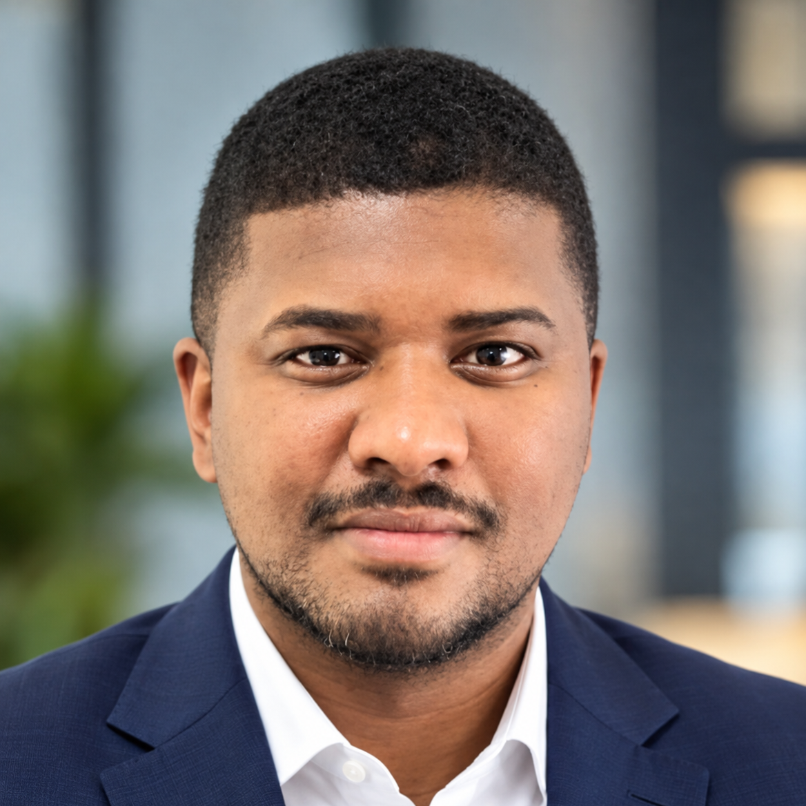
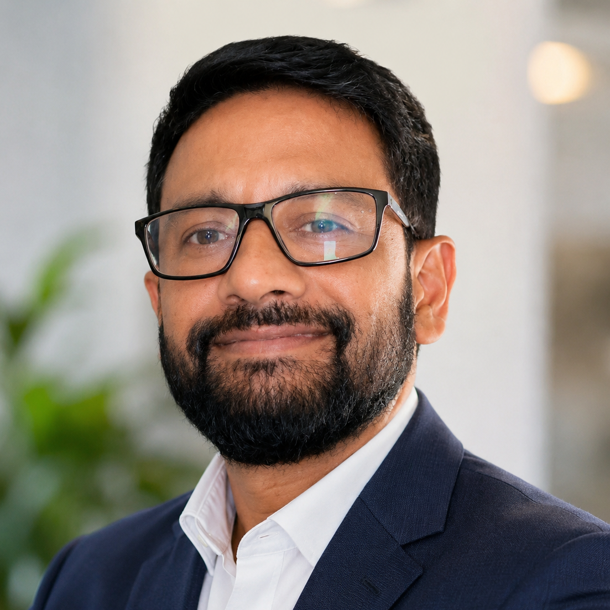

01 / QUALITY
Quality Assurance
Practical approaches to evaluating, improving and sustaining quality across contact centre operations.
A professional community for people shaping quality assurance, customer experience, and the future of contact centre operations across Africa.
Fresh perspectives. Practical ideas. People who understand the work.
QA Connect Africa exists to bring the people behind exceptional customer experiences into one connected professional community.
We create spaces for QA and customer experience professionals to exchange practical ideas, learn from industry leaders, build meaningful connections, and stay ahead of the changes reshaping contact centre quality.
From emerging technologies to better quality practices, our conversations are designed to move beyond theory and help professionals think about what comes next.
The conversations at QA Connect Africa sit where quality, people, technology and customer experience meet.
Practical approaches to evaluating, improving and sustaining quality across contact centre operations.
Exploring the relationship between quality, agent performance and the experiences customers remember.
Understanding how emerging technology is changing QA workflows, evaluation, insights and decision-making.
Turning quality insights into constructive feedback, stronger skills and meaningful performance improvement.
Exploring the skills, relationships and career pathways that help QA professionals take their next step.
Connecting scorecards, customer outcomes and business priorities to build QA programmes with purpose.
Our AI roundtable has wrapped up. Thank you to everyone who joined and shared their perspectives. Now, help us choose the conversations that matter most to you.
Choose your topics →During and after our AI roundtable, we asked what you wanted next. The conversation continues here.
Choose all the topics you would like QA Connect Africa to cover. Have a different idea? Add it under “Other”.
No name or email is required. Your suggestions help us plan future conversations; they do not register you for an event.
Your choices have been saved. They’ll help shape our next conversations.
Explore previous QA Connect Africa conversations, speakers and moments.
A conversation on automation, evaluation, agent performance, customer experience and the role of human judgement.
Explore the event & speakers →Where it all starts.
Held online on Saturday, 26 September 2026 at 11:00 AM WAT.
View original event listing →The professionals who brought their experience and perspective to our past roundtable.
Founder, QA Connect Africa • Host
Jecinta is a Quality Assurance and Customer Experience professional passionate about building high-performing teams and improving service quality. With experience in quality management, training, coaching, and operations, she founded QA Connect Africa to connect, empower, and grow contact centre and quality professionals across Africa.

Co-Founder & CEO • MartialQA
Darren is the Co-Founder and CEO of MartialQA, with expertise in customer service, CRM, and customer support. They are passionate about using data-driven insights and innovative solutions to improve customer experiences, strengthen support teams, and drive better service delivery.
Consultant & Facilitator, CX & Contact Centres • Haward Technologies (UAE)
Melissa is a senior BPO and Contact Centre leader with 25+ years of experience across operations, CX, quality, and training. As a Consultant and Facilitator at Haward Technologies, she helps organisations elevate contact centre performance and is passionate about AI-driven CX and quality excellence.

Senior Manager, Quality • Randstad
Mohit is an experienced Quality and Customer Experience leader specialising in contact centre QA, performance management, process improvement, and people development. His work focuses on AI-led quality assurance, automation, analytics, and coaching, using technology and data to make quality more scalable, effective, and business-focused.
Customer Service Quality Assurance Supervisor • Cartrack Tanzania
Neema is a Customer Service Quality Assurance Supervisor with expertise in service quality, coaching, process improvement, and customer experience. She is passionate about using AI and data-driven quality practices to improve customer experiences while keeping the human element at the heart of service.
QA Connect Africa is designed to create an ongoing space for professional connection, knowledge exchange and growth.
Build relationships with QA, customer experience and contact centre professionals across Africa and beyond.
Explore past conversations →Engage with ideas, perspectives and practical conversations that help professionals navigate an industry in constant motion.
Help shape the next conversation →Follow QA Connect Africa for community conversations and future event announcements.